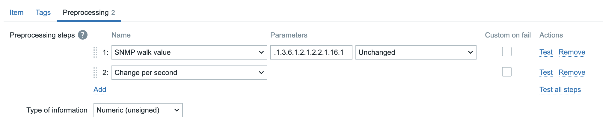

SNMP Polling
In the previous chapter, we explored monitoring strategies that relied on both active and passive Zabbix agents. This chapter introduces an alternative approach monitoring via SNMP (Simple Network Management Protocol) which does not require the installation of a Zabbix agent on the monitored device. This method is especially useful in environments where agent based monitoring is impractical, restricted or simply not allowed.
Simple Network Management Protocol (SNMP) is a widely adopted protocol designed for monitoring and managing devices on IP networks. Despite the word "management" in its name, SNMP is predominantly employed for monitoring purposes. Its widespread support across networking hardware and embedded systems has made it a cornerstone of modern network visibility solutions.
Originally developed in the late 1980s, SNMP has undergone several revisions. Early versions, such as SNMPv1 and SNMPv2c, were hampered by significant security limitations. As a result, while SNMP includes functionality for remote device configuration, its use has remained largely to status monitoring rather than active management of devices.
SNMP is especially valuable for monitoring resource constrained or embedded devices that lack the capacity to run a full monitoring agent.
Common examples include:
- Printers
- Network switches, routers, and firewalls
- Uninterruptible Power Supplies (UPSs)
- NAS (Network-Attached Storage) appliances
- Environmental sensors (e.g., temperature, humidity sensors)
These devices often provide built-in SNMP support, making them accessible for monitoring with minimal configuration. Additionally, SNMP can be employed on standard servers where installing or maintaining a Zabbix agent is either impractical or not permitted. This could be due to administrative policies, software compatibility or security concerns, or simply a desire to reduce system footprint.
Recognizing the ubiquity of SNMP, Zabbix provides native SNMP support. This capability is powered by the open-source Net-SNMP suite, available at http://net-snmp.sourceforge.net. The integration allows Zabbix to retrieve metrics from SNMP-enabled devices using industry standard mechanisms.
In this chapter, we will cover the following:
- An introduction to the Net-SNMP toolkit and its core utilities.
- How to integrate MIB (Management Information Base) files into Zabbix, enabling the platform to interpret SNMP data correctly.
- The process of SNMP polling within Zabbix, including how to define SNMP-based items and retrieve data from devices.
This chapter serves as the foundation for SNMP-based monitoring in Zabbix. While we begin with the essentials such as polling, MIB usage, and SNMP item configuration this is just the start.
Later in this book, we will build upon this knowledge by exploring Low-Level Discovery (LLD) mechanisms using SNMP. LLD allows Zabbix to automatically detect and create monitoring items for dynamic or repetitive structures, such as network interfaces, power supplies, ...
What is a MIB?
Imagine you have a house full of smart devices: a smart thermostat, a smart lamp, and a smart doorbell. All these devices keep track of various types of information. The thermostat has the indoor temperature and battery status, the lamp has its brightness and color, and the doorbell has a log of who has been at the door.
A MIB (Management Information Base) is the "table of contents" or "catalog" of all this information on a network device. Every SNMP enabled device has its own MIB, which is structured and organized. Without a MIB, your Zabbix server wouldn't know what data is available to monitor. The MIB specifies exactly which metrics the device can share.
What is an OID?
To retrieve a specific piece of information from that catalog, you need an address. An OID (Object Identifier) is that address.
You can think of an OID as a GPS coordinate or a book's unique ISBN number. It's a hierarchical sequence of numbers (for example, 1.3.6.1.2.1.1.3.0) that leads you to one specific piece of information, such as a device's uptime or the number of network errors on a particular port.
The OID is the exact path to the data within the MIB. Zabbix uses these OIDs to know what to request from the device. You configure Zabbix to say: "Request the value of this specific OID," and the device returns the requested value.
In short:
- The MIB is the library catalog that describes the structure of all available data.
- The OID is the specific address that leads you to the book (the data) you're looking for.
When Zabbix wants to monitor a device via SNMP, it uses an OID to send an SNMP request. The agent on the device searches its MIB for the data corresponding to that OID and sends the value back to Zabbix. This is the foundation of SNMP based monitoring.
What Is the OID Tree Structure?
The OID (Object Identifier) structure is a hierarchical tree, much like a family tree or a computer's folder structure. This tree is standardized globally. Each point on the tree, from the root to the "leaves," is represented by a number.
The tree starts at the root, with a few main branches managed by international
organizations. The most common branch for network management and SNMP often begins
with 1.3.6.1. Let's break down this OID to see how the structure works:
- 1: This branch is managed by ISO (International Organization for Standardization).
- 1.3: This branch is for
identified-organization. - 1.3.6: This is the branch for the U.S. Department of Defense (DoD).
- 1.3.6.1: This is the internet branch, managed by the IETF (Internet Engineering Task Force).
- ... and so on.
Every branch in this tree is responsible for managing the numbers below it. Companies
like Cisco or projects like Net-SNMP get their own unique number under a specific
branch, most commonly under 1.3.6.1.4.1, which is reserved for private enterprises.
How to Use the OID Tree
For Zabbix, the OID tree is essential for understanding what data is available on a device. Instead of remembering long, unreadable strings of numbers, MIB (Management Information Base) files use text labels to translate the numbers into human-readable names.
Example:
- The OID for a device's system description is:
1.3.6.1.2.1.1.1.0. - An MIB file translates this to:
sysDescr.0.
You can use the OID tree to:
- Look up data manually: You can browse MIB files or online OID databases to find the exact OID for the metric you want to monitor.
- Use SNMP commands: With commands like
snmpwalk,snmpget, orsnmpstatus, you can use the numeric OIDs or the readable names (if MIBs are loaded) to request data from a device. - Configure LLD (Low-Level Discovery): Zabbix uses OID sub-trees to automatically create monitoring items for dynamic components, such as network interfaces or disk partitions.
Net-SNMP
The Simple Network Management Protocol (SNMP) is a widely used protocol for monitoring and managing networked devices. It operates primarily over UDP port 161, though in certain cases, SNMP agents or proxies may also support TCP port 161 for enhanced reliability or integration with specific tools. SNMP allows administrators to query information or trigger actions on remote devices using structured data identified by Object Identifiers (OIDs).
To begin working with SNMP in a lab or testing environment, you may choose between two approaches:
- Use an existing SNMP capable device already present in your network infrastructure.
- Deploy a lightweight SNMP agent on a general-purpose server, such as your Zabbix server or a dedicated virtual machine.
In this chapter, we will walk through the installation and configuration of a basic SNMP agent on a Rocky or Ubuntu based Zabbix server. However, the same setup can be applied to any compatible Linux system.
Note: If you're using a device already present on your network, ensure:
- You have network access to the device (verify routing and firewall settings).
- SNMP access is allowed from your Zabbix server’s IP address.
- The correct community string is configured, and your IP is included in the SNMP access control rules of the device.
Dataflow between Zabbix and the SNMP device.
graph TD
A[Zabbix Server] -->|SNMP Request on port 161/UDP| B(Router, Switch, Printer, ...);
B -->|SNMP Agent| C{"Management Information Base (MIB)"};
C -->|Read data via OID's| B;
B -->|SNMP Response| A
4.28 Overview
Before we start lets go over a few tools that we will use and explain what they exactly do.
- snmpget: Retrieves the value of a single, specific OID.
- snmpwalk: Walks an entire OID subtree and displays all of its values.
- snmpstatus: Provides a summary of a device's basic status.
Testing an SNMP Device: Where to Start?
When you're looking to test an SNMP device, it's crucial to understand the available SNMP versions and which ones you should prioritize. Currently, there are three commonly used versions: SNMPv1, SNMPv2c, and SNMPv3.
- SNMPv1: This is the oldest version and should generally be avoided unless absolutely necessary. It's quite limited in functionality and has serious security vulnerabilities.
- SNMPv2c: Still the most prevalent version today, SNMPv2c offers improvements over v1, especially in data retrieval and performance. It's relatively straightforward to configure and use.
- SNMPv3: This version is rapidly gaining popularity and is considered the most secure and advanced option. It provides encryption, authentication, and user management, which are essential for secure networks.
Your First Test Attempt: SNMPv2c and the 'public' Community String
To begin your testing, we recommend trying to connect to your device using SNMPv2c and the standard community string 'public'. Many devices ship with these default settings, though it's certainly insecure for production environments.
You can use the snmpstatus command for this. Here’s an example of how you might
do this in your terminal:
Replace [IP-address_of_the_device] with the actual IP address or hostname of the
device you wish to test.
What if You Get No Information Back?
If you don't receive any information after this attempt, don't panic. It simply means the default settings likely don't apply to your device, or there might be a network related issue. You'll need to dig deeper into your device's configuration or troubleshoot your network.
First, check the device's configuration:
- SNMP Version: Which SNMP version (v1, v2c, or v3) is configured and enabled?
- Community String (for v1/v2c): If your device uses SNMPv1 or SNMPv2c, what is the configured community string (similar to a password) for read-only and potentially read- write access? It's rarely 'public' in a properly configured environment.
- Username, Authentication, and Privacy (for v3): If your device uses SNMPv3, you'll need more specific information: - Username: What username has been created for SNMPv3? - Authentication Protocol and Password: Which authentication protocol (e.g., MD5, SHA) is used, and what is its corresponding password? - Privacy Protocol and Password: Which encryption protocol (e.g., DES, AES) is used, and what is its corresponding password?
Next, consider potential network issues:
Even if your device is correctly configured, network obstacles can prevent SNMP communication. Check for:
- Firewall Blocking: A firewall (either on your testing machine, the network, or the SNMP device itself) might be blocking the UDP port 161, which SNMP typically uses. Ensure the necessary ports are open.
- ACL Settings on the Device: The SNMP device itself might have Access Control List (ACL) settings configured to restrict access only to specific IP addresses. Verify that your testing machine's IP address is permitted.
- Network Connectivity: Basic network issues like incorrect IP addresses, subnet masks, or routing problems can also prevent communication. Ensure there's a clear network path between your testing machine and the SNMP device.
SNMPv3 Security Levels
SNMPv3 offers significant security enhancements over older, unsecured versions (SNMPv1 and SNMPv2c). The protocol has three security levels:
-
noAuthNoPriv (Authentication and encryption off): This is the least secure level. There's no authentication and no encryption. It's similar to SNMPv1 and SNMPv2c and offers no protection. It should only be used in strictly controlled lab environments where security is not a concern.
-
authNoPriv (Authentication on, encryption off): This level authenticates the user, which guarantees data integrity. It verifies that messages come from a trusted source and haven't been tampered with. However, the data isn't encrypted, so it remains readable if the traffic is intercepted. This level is suitable for non-sensitive data in a relatively secure network. Authentication protocols used here are typically MD5 or SHA.
-
authPriv (Authentication and encryption on): This is the most secure and recommended level. It provides both authentication and data encryption. Authentication ensures the integrity and origin of the message, while encryption makes the data unreadable to third parties. This is essential for monitoring sensitive information or when communicating over unsecured networks. Encryption protocols used include DES, 3DES, and AES.
Examples of SNMPv3 Commands
Once you have the necessary information (and have ruled out network issues), you
can try connecting with SNMPv3. Here are some examples of how you might use snmpstatus
with SNMPv3 (depending on your configuration):
- Authentication only (no encryption):
snmpstatus -v 3 -l authNoPriv -u [username] -a [authentication_protocol] -A [authentication_password]
[IP-address_of_the_device]
(Replace [authentication_protocol] with MD5 or SHA)
- Authentication and Encryption:
snmpstatus -v 3 -l authPriv -u [username] -a [authentication_protocol] -A [authentication_password]
-x [privacy_protocol] -X [privacy_wachtwoord] [IP-address_of_the_device]
(Replace [authentication_protocol] with MD5 or SHA and [privacy_protocol]
with DES or AES)
A Note on SNMPv1: Avoid if Possible
While you can technically test with SNMPv1, we strongly advise against using it in production. SNMPv1 is an outdated and insecure protocol version vulnerable to various attacks. Always try to connect with v2c or v3 first. Only if you are absolutely certain that the device exclusively supports SNMPv1 and you have no other option, you can try using it:
However, remember that using SNMPv1 in a production environment poses a significant security risk.
Understanding the Output of snmpstatus
Let's take a look at an example output from the snmpstatus command. Remember
this is just an example output it will differ from your result.
snmpstatus -v2c -c public 127.0.0.1
[UDP: [127.0.0.1]:161->[0.0.0.0]:33310]=>[Linux localhost.localdomain 5.14.0-570.28.1.el9_6.aarch64
#1 SMP PREEMPT_DYNAMIC Thu Jul 24 07:50:10 EDT 2025 aarch64] Up: 1:24:36.58
Interfaces: 2, Recv/Trans packets: 355763/355129 | IP: 37414/35988
This output provides a concise summary of the device's status, indicating a successful SNMP query. Let's break down what each part means:
-
snmpstatus -v2c -c public 127.0.0.1:-v2c: Specifies that SNMP version 2c was used.-c public: Indicates that the community string "public" was used for authentication.127.0.0.1: This is the target IP address, in this case, the localhost (the machine on which the command was run).
-
[UDP: [127.0.0.1]:161->[0.0.0.0]:33310]:- This section describes the communication path.
UDP: Confirms that the User Datagram Protocol was used, which is standard for SNMP.[127.0.0.1]:161: This is the source of the SNMP request and the standard SNMP port (161) on which the SNMP agent listens.->[0.0.0.0]:33310: This indicates the destination of the response.0.0.0.0is a placeholder for "any address," and33310is a high-numbered ephemeral port used by the client to receive the response.
-
[Linux localhost.localdomain 5.14.0-570.28.1.el9_6.aarch64 #1 SMP PREEMPT_DYNAMIC Thu Jul 24 07:50:10 EDT 2025 aarch64]:- This is crucial information about the queried device itself.
Linux localhost.localdomain: Identifies the operating system as Linux, with the hostnamelocalhost.localdomain.5.14.0-570.28.1.el9_6.aarch64: This is the kernel version and architecture#1 SMP PREEMPT_DYNAMIC Thu Jul 24 07:50:10 EDT 2025 aarch64: Provides further kernel build details, including the build date and time.
-
Up: 1:24:36.58:- This indicates the uptime of the device. The system has been running for 1 day, 24 hours, 36 minutes, and 58 seconds.
-
Interfaces: 2, Recv/Trans packets: 355763/355129 | IP: 37414/35988:Interfaces: 2: This tells us that the device has detected 2 network interfaces.Recv/Trans packets: 355763/355129: These numbers represent the total number of packets received and transmitted across all network interfaces on the device since it was last booted.IP: 37414/35988: These figures likely represent the number of IP datagrams received and sent specifically by the IP layer on the device. This provides a more specific metric of IP traffic compared to the total packet count which includes other layer 2 protocols.
In summary, this output from snmpstatus quickly provides a clear overview of a
Linux system's basic health and network activity, confirming that the SNMP agent
is reachable and responding with the requested information using SNMPv2c.
Installing SNMP Agent on a Linux Host
Now that we know a bit more about SNMP it's time to start playing next we will install the SNMP agent and utilities on our Zabbix server to do some testing. Or another compatible system if you prefer.
Follow the steps below to get the SNMP agent installed.
- Install Required Packages
Install Net-SNMP agent and utilities
Red Hat
Ubuntu
- Configure the SNMP Agent First, create a clean configuration file for the SNMP daemon:
Paste the following example configuration, which is optimized for SNMP-based discovery and testing in Zabbix:
tee /etc/snmp/snmpd.conf <<EOF
# --------------------------------------------------------------------------
# BASIC ACCESS CONTROL
# --------------------------------------------------------------------------
# This defines who has access and with which community string.
# For a LAB ENVIRONMENT, 'public' is acceptable, but EMPHASIZE THAT THIS IS UNSAFE
# FOR PRODUCTION. In production, use SNMPv3 or restricted IP ranges.
# Read-only community string 'public' for all IP addresses (WARNING: LAB USE ONLY!)
rocommunity public
#
# IMPORTANT NOTE: The 'public' community string is the default and most well-known community string.
# Using this in a production environment is EXTREMELY INSECURE and makes your device vulnerable.
# Anyone who knows your device's IP address can query basic information about your system.
# USE THIS ONLY AND EXCLUSIVELY IN STRICTLY ISOLATED TEST OR LAB ENVIRONMENTS!
# For production environments:
# - Use a unique, complex community string (e.g., rocommunity YourSuperSecretString)
# - STRONGLY CONSIDER implementing SNMPv3 for superior security (authentication and encryption).
#
# BETTER FOR LAB (or production with restrictions):
# rocommunity my_secure_community_string 192.168.56.0/24
# Replace '192.168.56.0/24' with the subnet where your Zabbix Server is located.
# ============================================
# SNMPv3 Configuration (Recommended for Production, but here with examples)
# ============================================
#
# This section defines users for SNMPv3, each with a different security level.
# In a production environment, you would typically ONLY use the 'authPriv' option
# with strong, unique passwords. This setup is useful for lab and testing purposes.
# --- 1. SNMPv3 User with Authentication and Privacy (authPriv) ---
# THIS IS THE MOST SECURE AND RECOMMENDED SECURITY LEVEL FOR PRODUCTION.
# It requires both correct authentication and encryption of the traffic.
#
# Syntax: createUser USERNAME AUTH_PROTOCOL "AUTH_PASS" PRIV_PROTOCOL "PRIV_PASS"
# Example: createUser mysecureuser SHA "StrongAuthP@ss1" AES "SuperPrivP@ss2"
createUser secureuser SHA "AuthP@ssSec#1" AES "PrivP@ssSec#2"
rouser secureuser authPriv
# --- 2. SNMPv3 User with Authentication Only (authNoPriv) ---
# This level requires authentication, but the data is NOT encrypted.
# The content of SNMP packets can be read if traffic is intercepted.
# NOT RECOMMENDED FOR SENSITIVE DATA OR PRODUCTION ENVIRONMENTS.
#
# Syntax: createUser USERNAME AUTH_PROTOCOL "AUTH_PASS"
# Example: createUser authonlyuser SHA "AuthOnlyP@ss3"
createUser authonlyuser SHA "AuthOnlyP@ss3"
rouser authonlyuser authNoPriv
# --- 3. SNMPv3 User with [48;32;186;960;2604tNo Authentication and No Privacy (noAuthNoPriv) ---
# THIS IS THE LEAST SECURE LEVEL AND SHOULD NEVER BE USED IN PRODUCTION!
# It offers NO SECURITY WHATSOEVER. It's purely for very specific test scenarios
# where security is not a concern.
#
# Syntax: createUser USERNAME
# Example: createUser insecureuser
createUser insecureuser
rouser insecureuser noAuthNoPriv
#
# IMPORTANT SECURITY NOTES FOR ALL SNMPv3 USERS:
# - Replace the example usernames and passwords with your OWN strong, unique values.
# - Passwords must be a MINIMUM of 8 characters long.
# - The passwords for AUTH and PRIV (with authPriv) do not have to be the same.
# - Restrict access to specific IP addresses (e.g., 'rouser USERNAME authPriv 192.168.1.0/24')
# if you want to further tighten access.
#
# --------------------------------------------------------------------------
# SYSTEM INFORMATION (OPTIONAL)
# --------------------------------------------------------------------------
# This information is generally available via SNMP and useful for identification.
syslocation "Rocky Linux Zabbix SNMP Lab Server"
syscontact "Your Name <your.email@example.com>"
sysname "RockySNMPHost01" # Often overridden by hostname, but can be specific
# --------------------------------------------------------------------------
# ENABLING CRUCIAL MIB MODULES FOR LLD
# --------------------------------------------------------------------------
# 'view' statements determine which parts of the MIB tree are visible.
# 'systemview' is a standard view. We ensure that the most useful OID trees
# for Zabbix LLD are included here.
# Standard System MIBs (uptime, description, etc.)
view systemview included .1.3.6.1.2.1.1 # SNMPv2-MIB::sysDescr, sysUptime, etc.
# HOST-RESOURCES-MIB: ESSENTIAL FOR LLD OF HARDWARE/OS COMPONENTS
# This MIB contains information about storage (filesystems), processors,
# installed software, running processes, etc.
view systemview included .1.3.6.1.2.1.25
# IF-MIB: ESSENTIAL FOR LLD OF NETWORK INTERFACES
# Contains detailed information about network interfaces.
view systemview included .1.3.6.1.2.1.2
# Other useful MIBs (often standard or optional)
view systemview included .1.3.6.1.2.1.4
view systemview included .1.3.6.1.2.1.6
view systemview included .1.3.6.1.2.1.7
# --------------------------------------------------------------------------
# EXTENDING SNMPD WITH EXEC COMMANDS (OPTIONAL FOR CUSTOM LLD)
# --------------------------------------------------------------------------
# This allows you to make the output of shell commands or scripts available via SNMP.
# This is ideal for monitoring things not natively available via SNMP.
# Example: Monitor the number of logged-in users (not LLD, but demonstrates the principle)
# exec activeUsers /usr/bin/who | wc -l
# Example: A script that generates LLD-like output
# imagine /opt/scripts/docker_lld.sh returns JSON that Zabbix can parse
# exec dockerContainers /opt/scripts/docker_lld.sh
# This requires a custom LLD parser in Zabbix. For an introduction, this
# might be a bit too advanced, but it's good to mention as a possibility.
# --------------------------------------------------------------------------
# SYSLOGGING
# --------------------------------------------------------------------------
# For logging snmpd activities (useful for debugging)
dontLogTCPWrappers no
EOF
Let's do some practical tests with this setup we just created. Start the SNMP Service and Configure the Firewall
# Check that the service is running
sudo systemctl status snmpd
If your system uses firewalld, ensure that SNMP traffic is allowed:
Verifying SNMP Functionality
From your Zabbix server or any SNMP client system with net-snmp-utils installed:
# Repace <IP_ADDRESS> wit the IP of the client where you installed the SNMP
# config. If localhost you can use 127.0.0.1.
# General system info (sysDescr, sysUptime, etc.)
snmpwalk -v2c -c public <IP_ADDRESS> .1.3.6.1.2.1.1
# List interface names (useful for interface LLD)
snmpwalk -v2c -c public <IP_ADDRESS> .1.3.6.1.2.1.2.2.1.2
# List filesystem descriptions
snmpwalk -v2c -c public <IP_ADDRESS> .1.3.6.1.2.1.25.2.3.1.3
# Get CPU load per processor core
snmpwalk -v2c -c public <IP_ADDRESS> .1.3.6.1.2.1.25.3.3.1.2
Note
For SNMPv3 we can do the same. You could adapt the configuration file or just go with what we have prepared already in the snmpd.conf file.
vi /etc/snmp/snmpd.conf
# Look for the following lines and adapt them as you like.
createUser authonlyuser SHA "AuthOnlyP@ss3"
rouser authonlyuser authNoPriv
createUser secureuser SHA "AuthP@ssSec#1" AES "PrivP@ssSec#2"
rouser secureuser authPriv
createUser insecureuser
rouser insecureuser noAuthNoPriv
After you have adapted your config don't forget to restart the snmpd service
You should now be able to test your items with SNMPv3 Let me give you an example
command for noAuthNoPriv,authNoPriv and the most secure authPriv. This should
work out of the box with what is already configured in our snmpd.conf file.
snmpwalk -v3 -l noAuthNoPriv -u insecureuser 127.0.0.1 .1.3.6.1.2.1.2.2.1.2
snmpwalk -v3 -l authNoPriv -u authonlyuser -a SHA -A AuthOnlyP@ss3 127.0.0.1 .1.3.6.1.2.1.2.2.1.2
snmpwalk -v3 -l authPriv -u secureuser -a SHA -A AuthP@ssSec#1 -x AES -X PrivP@ssSec#2 127.0.0.1 .1.3.6.1.2.1.2.2.1.2
Note
If you change the config file and adapt the passwords and for some reason they do not get accepted do not worry just restart the service again it things still don't work you can remove the persistent key file sudo rm /var/lib/net-snmp/snmpd.conf It's quite brutal but in our test environment it will help you out.
SNMP Monitoring in Zabbix
Now that we have covered how SNMP works, it's time to put that knowledge into practice. We'll start up our Zabbix instance and begin monitoring, but first, it's crucial to understand the two different methods Zabbix offers for retrieving SNMP information from a device.
Warning
The RFC3411 Specs specify that an EngineID needs to be unique this is very
important for monitoring. You will see errors like Bad parse of ASN.1 if you
have a conflict.
Within an administrative domain, an snmpEngineID is the unique and
unambiguous identifier of an SNMP engine. Since there is a one-to-
one association between SNMP engines and SNMP entities, it also
uniquely and unambiguously identifies the SNMP entity within that
administrative domain. Note that it is possible for SNMP entities in
different administrative domains to have the same value for
snmpEngineID. Federation of administrative domains may necessitate
assignment of new values.
Legacy SNMP Monitoring
The traditional method for SNMP monitoring is synchronous. It uses a single OID placed directly into the item's SNMP OID field. Zabbix will wait for a response before it moves on to the next check.
- OID: A single textual or numeric OID is used to retrieve a single value synchronously.
For example:
1.3.6.1.2.1.31.1.1.1.6.3. - The timeout for these items is governed by the
Timeoutparameter in the Zabbix server configuration file. To make this method functional, theStartPollersparameter must also be correctly configured.
When we talk about bulk processing in legacy it can be interesting to have a look at the Zabbix documentation about this subject. https://www.zabbix.com/documentation/current/en/manual/config/items/itemtypes/snmp#internal-workings-of-combined-processing
Asynchronous SNMP Monitoring (Recommended)
The newer, recommended approach is asynchronous and provides much better
performance. It leverages native SNMP bulk requests (GetBulkRequest-PDUs).
walk[OID1, OID2, ...]: This retrieves a subtree of values. For example:walk[1.3.6.1.2.1.2.2.1.2,1.3.6.1.2.1.2.2.1.3].get[OID]: This retrieves a single value asynchronously. For example:get[1.3.6.1.2.1.31.1.1.1.6.3].
With asynchronous monitoring, timeout settings can be configured per item. It's best to set a low timeout value to avoid long delays if a device is unreachable, as Zabbix will attempt up to 5 retries. A 3-second timeout, for instance, could result in a 15-second wait.
All walk[OID] and get[OID] items are executed asynchronously, meaning Zabbix
does not need to wait for one response before starting other checks. DNS resolution
is also handled asynchronously. The maximum concurrency for these checks is 1000,
defined by the MaxConcurrentChecksPerPoller parameter. The number of SNMP pollers
dedicated to this method is set by the StartSNMPPollers parameter.
Synchronous versus Asynchronous Polling
Zabbix can also use two different internal methods for polling:
Synchronous Polling
Synchronous polling means the Zabbix server queries one SNMP OID at a time and waits for the response before continuing. This is simpler and ensures accurate timing, but it can become slow when monitoring hundreds or thousands of items per second.
- Characteristics: Sequential, blocking, predictable timing
- Use case: Small environments or when timing precision is critical
Asynchronous Polling
Asynchronous polling sends multiple SNMP requests in parallel without waiting for each response before sending the next. This dramatically increases performance and reduces latency in large environments.
- Characteristics: Parallel, non-blocking, more efficient
- Use case: Large-scale Zabbix installations with many SNMP hosts
| Method | Direction | Timing | Example | Pros | Cons |
|---|---|---|---|---|---|
| Polling (Sync) | Zabbix → Device | Periodic | SNMP GET for CPU load | Predictable, simple | Slower, more traffic |
| Polling (Async) | Zabbix → Device | Parallel | Many SNMP GETs at once | Fast, scalable | More complex tuning |
Polling Your First OID in Zabbix
Let's begin by polling our first OID in Zabbix. As you may recall from a previous
snmpwalk command, querying .1.3.6.1.2.1.2.2.1.2 returned two results, identifying
the network interfaces on the device:
IF-MIB::ifDescr.1 = STRING: loIF-MIB::ifDescr.2 = STRING: enp0s1
To find the inbound and outbound octets for the enp0s1 network card, we need to
locate the correct OID. While a MIB file would provide a clear map of all available
OIDs, this isn't always an option. A common method to discover the correct OID is
to perform a broader snmpwalk by removing the last digit from the initial OID.
This command returns a more extensive list of MIB objects.
IF-MIB::ifIndex.1 = INTEGER: 1
IF-MIB::ifIndex.2 = INTEGER: 2
IF-MIB::ifDescr.1 = STRING: lo
IF-MIB::ifDescr.2 = STRING: enp0s1
...
IF-MIB::ifInOctets.1 = Counter32: 697830615
IF-MIB::ifInOctets.2 = Counter32: 49954965
...
From this output, we can see that the index for our target network card, enp0s1,
is 2. This confirms that we can use this index to find the correct data.
The output IF-MIB::ifInOctets.2 = Counter32: 49954965 appears to be the value
we need, but this is not the raw OID.
To convert this human-readable output into a numerical OID that Zabbix can use,
we can add the -On flag to our snmpwalk command, which converts the output
to its numerical form.
The result is the specific OID for the inbound octets on the enp0s1 interface:
This is the OID you would use to configure an SNMP item in Zabbix to monitor the network traffic for this specific interface.
Another useful tool that will help here is snmptranslate which does the same
thing and also the other way back.
snmptranslate
There is yet another tool that helps to visualise a SNMP table with the easy to
remember name ... snmptable. This tool allows you to see the data more easy
then a simple a snmp walk. To stay with our network cards have a look at this
output.
snmptable
Polling a single SNMP item
Ok enough with the theory let's create an actual item in Zabbix. Create a new
host with the name SNMP Device and place it in a group SNMP Devices. We also
need to tell Zabbix where we can find our SNMP device as Zabbix is doing the
polling (Or if we use a Proxy it will be the proxy.)
So let's add a SNMP Interface and give it the IP of the device we would like
to monitor. If you have been following our steps on the local machine you can
use ip 127.0.0.1, our own server.

4.29 SNMP Interface
Once our host is created and saved with the correct interface we have to create
an item on the host. Click on items next to the host SNMP Device. On the top
right click the box Create item you will be greeted with another form to fill
in the item information.
- Name: In traffic enp0s1 (A short descriptive name)
- Type: SNMP Agent
- Key: snmp.in (free form short descriptive)
- Type of information: Numeric(Unsigned)
- Host interface: The SNMP interface we created on our host. If you have more then 1 interface just select the one you need.
- SNMP OID: get[oid] to retrieve the information or only the oid but then it will use synchronous polling.
- Units: The data is in bytes so use B.

04.30 SNMP Item
Before we safe this item there is one more important step we need to do. Network items are usually counters. Meaning the device is just counting the amount of traffic that passed the interface. This means the counter will always go up as more data passes the interface over time. So we need to calculate a delta.
For this we can use preprocessing steps so let's move to the tab preprocessing
first before we save it.
Add a preprocessing step with the name Change per second

snmp preprocessing
We can now safe the item and have a look at our latest data page we should have a nice graph with our data over time.
If you decide to use the test button before you safe the item (this is always a
good idea then don't forget that Zabbix needs 2 item values tot calculate the
difference. ) So you will have to test the Get value and test button twice.
Also don't forget to select the Get value from host box so Zabbix retrieves it
from the host.
How does change per second work ?
Given a counter value sampled at two different times:
- At time ( t_1 ), the counter value is ( C_1 ).
- At time ( t_2 ), the counter value is ( C_2 ).
The change per second (rate) is calculated as:
$$ \text{Rate} = \frac{C_2 - C_1}{t_2 - t_1} $$
where ( t_2 - t_1 ) is the time elapsed in seconds.
If the counter rolls over (i.e., ( C_2 < C_1 )), and the max counter value is ( M ), then adjust as:
$$ \text{Rate} = \frac{(M - C_1) + C_2 + 1}{t_2 - t_1} $$
Polling a list of item
Let's do the same for our snmp walk item. This time we will look for the
information from all our interfaces. For this we need to find our correct OID
first. This can be done with snmptranslate which will convert our table name
to an OID,
This is the OID we can use in our item. Let's clone our previous item and make some changes.
- Name: ifTable (or another descriptive name)
- Key: snmp.ifTable
- Type of information:: Text
- SNMP OID: walk[.1.3.6.1.2.1.2.2]
The rest can stay as is just remove the preprocessing step we added in earlier example as this item will return us a whole list of information.

04.32 SNMP Walk
When we press the Get value and test button in the test item screen we get a
whole list of data.
.1.3.6.1.2.1.2.2.1.1.1 = INTEGER: 1
.1.3.6.1.2.1.2.2.1.1.2 = INTEGER: 2
.1.3.6.1.2.1.2.2.1.2.1 = STRING: "lo"
.1.3.6.1.2.1.2.2.1.2.2 = STRING: "enp0s1"
.1.3.6.1.2.1.2.2.1.3.1 = INTEGER: 24
.1.3.6.1.2.1.2.2.1.3.2 = INTEGER: 6
.1.3.6.1.2.1.2.2.1.4.1 = INTEGER: 65536
.1.3.6.1.2.1.2.2.1.4.2 = INTEGER: 1500
.1.3.6.1.2.1.2.2.1.5.1 = Gauge32: 10000000
.1.3.6.1.2.1.2.2.1.5.2 = Gauge32: 0
.1.3.6.1.2.1.2.2.1.6.1 = STRING: ""
.1.3.6.1.2.1.2.2.1.6.2 = STRING: "76:ae:5:aa:5f:45"
.1.3.6.1.2.1.2.2.1.7.1 = INTEGER: 1
.1.3.6.1.2.1.2.2.1.7.2 = INTEGER: 1
.1.3.6.1.2.1.2.2.1.8.1 = INTEGER: 1
.1.3.6.1.2.1.2.2.1.8.2 = INTEGER: 1
.1.3.6.1.2.1.2.2.1.9.1 = 0
.1.3.6.1.2.1.2.2.1.9.2 = 0
.1.3.6.1.2.1.2.2.1.10.1 = Counter32: 69417222
.1.3.6.1.2.1.2.2.1.10.2 = Counter32: 59215034
.1.3.6.1.2.1.2.2.1.11.1 = Counter32: 6460587
.1.3.6.1.2.1.2.2.1.11.2 = Counter32: 113038
.1.3.6.1.2.1.2.2.1.12.1 = Counter32: 0
.1.3.6.1.2.1.2.2.1.12.2 = Counter32: 0
.1.3.6.1.2.1.2.2.1.13.1 = Counter32: 0
.1.3.6.1.2.1.2.2.1.13.2 = Counter32: 0
.1.3.6.1.2.1.2.2.1.14.1 = Counter32: 0
.1.3.6.1.2.1.2.2.1.14.2 = Counter32: 0
.1.3.6.1.2.1.2.2.1.15.1 = Counter32: 0
.1.3.6.1.2.1.2.2.1.15.2 = Counter32: 0
.1.3.6.1.2.1.2.2.1.16.1 = Counter32: 69417222
.1.3.6.1.2.1.2.2.1.16.2 = Counter32: 44139841
.1.3.6.1.2.1.2.2.1.17.1 = Counter32: 6460587
.1.3.6.1.2.1.2.2.1.17.2 = Counter32: 97398
.1.3.6.1.2.1.2.2.1.18.1 = Counter32: 0
.1.3.6.1.2.1.2.2.1.18.2 = Counter32: 0
.1.3.6.1.2.1.2.2.1.19.1 = Counter32: 0
.1.3.6.1.2.1.2.2.1.19.2 = Counter32: 0
.1.3.6.1.2.1.2.2.1.20.1 = Counter32: 0
.1.3.6.1.2.1.2.2.1.20.2 = Counter32: 0
.1.3.6.1.2.1.2.2.1.21.1 = Gauge32: 0
.1.3.6.1.2.1.2.2.1.21.2 = Gauge32: 0
.1.3.6.1.2.1.2.2.1.22.1 = OID: .0.0
.1.3.6.1.2.1.2.2.1.22.2 = OID: .0.0
So we have the traffic in but we would like to find traffic out as well of course. Let's use our walk item to extract the outgoing traffic for this we need to create a dependent item.
Go to Data collection - Hosts and click on Items. You should be able to
see our newly created ifTable item and 3 dots before it's name.
Click on those 3 dots and select Create dependent item from the list.
Fill in the new item with the following information.
- Name: Out traffic enp0s1
- Type: dependent item
- Key: snmp.out
- Type of information: Unsigned
- Master item: Already filled in but should be our item ifTable that we made before.
- Units: B

04.33 Dependent SNMP Item
This item as is at the moment is an exact copy of our master item so we need to
add some preprocessing steps first. Let's go to the tab preprocessing and add
our first step.
Add the step SNMP walk value and after it paste the OID we want .1.3.6.1.2.1.2.2.1.16.1
and choose unchanged.
Remember from our previous item we need to calculate the Changes per second
so add this as the second preprocessing step.

04.34 preprocessing steps
Going now to our latest data page will show use the In and Our traffic for our network card but with data gathered in different ways. Both ways use the synchronous pollers but the last way will gather all data at once and then pre-process it.
After you have added more items you can remove the option to keep history from your master items.
Conclusion
SNMP polling remains a vital method for monitoring network devices when agents aren't an option. With Zabbix's asynchronous polling, checks can run in parallel, dramatically improving performance and lowering the load on both your server and the network. SNMPv3 should be your go-to choice, delivering authentication and encryption to secure sensitive data. The SNMP walk item type adds another advantage collecting multiple metrics in bulk with a single request, making discovery and ongoing polling faster and more efficient.
By combining these modern features with carefully tuned polling intervals and item counts, you can create an SNMP setup that is secure, efficient, and scalable. And with asynchronous speed, SNMPv3 security, and bulk walks at your disposal, you're ready to monitor more devices, in less time, with greater confidence. Now it's time to put these capabilities to work and see just how far your monitoring can go.
Questions
- Why is it better use SNMPv3 instead of v2c or v1 ?
- Do I need to configure pollers for SNMP ? If so which pollers ?
- Can I still use the old style to monitor SNMP ? Should I start using get[] and walk[] instead ?
Useful URLs
- https://www.zabbix.com/documentation/current/en/manual/config/items/itemtypes/snmp
- https://en.wikipedia.org/wiki/Simple_Network_Management_Protocol
- https://datatracker.ietf.org/doc/html/rfc3410
- https://blog.zabbix.com/zabbix-snmp-what-you-need-to-know-and-how-to-configure-it/10345/
- https://datatracker.ietf.org/doc/html/rfc3411#section-3.1.1.1